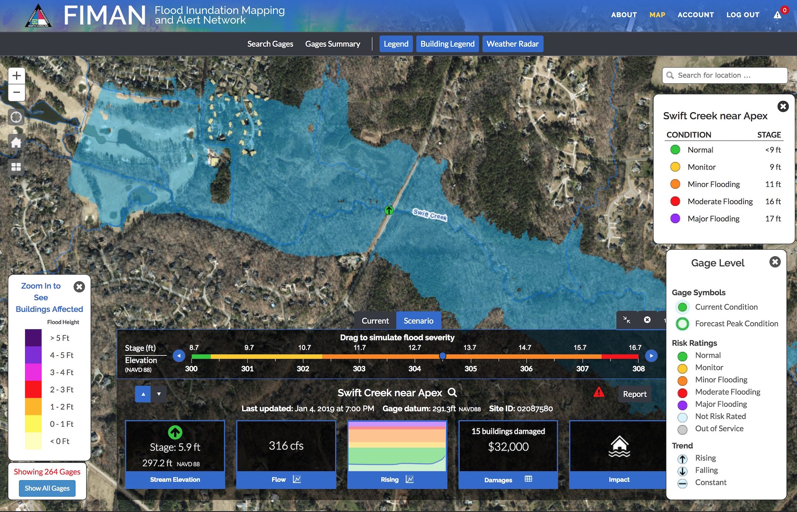

Introduction to Geocomputation
Helena Mitasova, Anna Petrasova, Vaclav Petras
GIS714 Geospatial Computation and Simulation NCSU
Learning objectives
- geocomputation definitions
- motivations for geosimulation
- models for geosimulation and their properties
- applications in science and practice
- open source platforms and tools
Geocomputation
The Art and Science of Solving Complex Spatial Problems with Computers
Geocomputation includes
- Geospatial analysis and visualization
- Data mining and image processing using machine learning,
artificial inteligence, neural networks
- Modeling spatial processes with continuous fields
- Agent-based spatial modeling
- Spatial optimization: siting, routing, land management
- Serious spatial games and game-based modeling
Geocomputation includes
Geospatial analysis:
3D vegetation structure from multiple return lidar point cloud

Petras V., Newcomb D. J., Mitasova H, 2017. Generalized 3D fragmentation index derived from lidar point clouds. In: Open Geospatial Data, Software and Standards.
Geocomputation includes
Geospatial visualization:
3D vegetation structure from multiple return lidar point cloud

Petras V., Newcomb D. J., Mitasova H, 2017. Generalized 3D fragmentation index derived from lidar point clouds. In: Open Geospatial Data, Software and Standards.
Geocomputation includes
Modeling dynamic spatial processes:
distribution of solar radiation during summer solstice

Geospatial simulations
- Using modeling to simulate complex spatial processes or behaviors under designed set of conditions to gain understanding of the studied phenomenon
- Numerical simulations are computational tools for gaining new knowledge - virtual experiments
- Diagnostic and predictive modeling
- Provide information for decision making
- In literature, often focused on agent based modeling and cellular automata but we will use a broader definition
Geospatial simulation example
Simulation of sediment transport and net erosion / deposition to understand interactions between land cover and water quality and to support sustainable land use management

Mitas, L., Mitasova, H., 1998, Distributed erosion modeling for effective erosion prevention Water Resources Research Vol. 34, No. 3, pp. 505-516.
Geospatial process models
Geospatial process models are core tools for simulations.
The models of geophysical, biological and socio-economic processes have evolved:
- from: empirical, spatially averaged, and static
- to: process-based, distributed, and dynamic with the aim to predict modeled quantity at any point in space and time
Most models combine both approaches
Empirical models
- statistical models derived from experimental or observed data
- applicable only to landscapes under same conditions
- empirical / statistical methods often have physics based interpretations
- given sufficient data they can be very accurate (ML, AI)
Example: Universal Soil Loss Equation: U = RKLSCP, the factors are based on observations, but topographic LS factor also represents a special case of stream power
Provide examples from your research
Process-based models
- derived from first principles, based on physical laws, such as continuity and mass conservation equations
- refered to as mechanistic or deterministic models
- may include stochastic components
- can simulate the process under conditions not previously observed
- physics based equations often have empirical parameters
Example: surface water flow model is based on partial differential (St. Venant) equation, but uses empirical Mannings coefficient for computing flow velocity
Provide examples from your research
Modeling components
When performing simulations we need to consider:
- Modeled quantity: water depth [m], discharge [m$^3$/s], pollutant concentration[mg/l]
- Spatial and temporal scale: e.g. modeling a first order stream may require 1m spatial and 1 min temporal resolution
- Configuration space and interactions: water depth depends on precipitation, topography, soils, land use
- Governing equations: continuity equations, diffusion, ...
Geospatial representation
Modeled quantities and environmental variables can be represented by continuous georeferenced fields
To support numerical simulations these fields need to be discretized:
- spatially averaged units: discrete polygons (hydrologic units, hillslope elements, landscape patches)
- spatially distributed representation: structured and unstructured meshes, or random particles
Modeled quantities can also evolve along networks or represent discrete objects (particles, agents)
Spatially averaged models
Spatially averaged models predict the modeled variable for each averaged unit, such as watershed, the result is discrete polygons or a number
Spatially distributed models
Spatially distributed or spatially explicit models predict the variable at any point in space and the result is continuous field
Coupled models for simulations of complex systems
- Continuous time simulations of coupled processes
- problems: different spatial and temporal scales, discretization
- examples: SWAT, WEPP: weather, runoff, infiltration, crop growth, soil erosion, pollutant transport
- coupled agent based and continuous field models for complex human - nature systems simulations (MEDLANDS)
Geospatial simulations challenges
- data intensive - large heterogeneous data sets
- complex, multiscale spatial interactions
- high level of uncertainty and difficult validation
- input and validation data may not available at sufficient spatial and temporal resolution
- process-based distributed models do not always improve accuracy but they provide important insight
Physics : predictions at the electronic level are with 6-12 digits accuracy
Geosciences: 70% differences between measurements and model could be satisfactory
Example: we cannot predict rainfall rate at each 100m cell with high accuracy and
we don’t have values of initial soil moisture at sufficient temporal resolution,
so it is difficult to accurately model infiltration, runoff or sediment flow at any point in space
Geospatial simulations and GIS
- workflow using standard GIS tools: simple empirical models with physics based components
- models fully integrated as modules: complex physics-based or empirical models
- models linked to GIS as extensions or add-ons: common structure and interface
- complex modeling systems linked through data: GIS is used for input data processing, results analysis and visualization, but the model is independent from GIS.
- complex modeling systems can incorporate selected GIS capabilities
Geospatial simulation environments
- desktop with modern GUIs, touch tables
- tangible GIS
- collaborative web environments
- virtual reality systems
Applications in science
Pioneering paper:
W. R. Tobler (1970) A Computer Movie Simulating Urban Growth in the Detroit Region, Economic Geography, 46:sup1, 234-240, DOI: 10.2307/143141

Applications in science
Pioneering paper:
W. R. Tobler (1970) A Computer Movie Simulating Urban Growth in the Detroit Region, Economic Geography, 46:sup1, 234-240, DOI: 10 .2307/143141
Applications in science
Pioneering paper:
W. R. Tobler (1970) A Computer Movie Simulating Urban Growth in the Detroit Region, Economic Geography, 46:sup1, 234-240, DOI: 10 .2307/143141
Applications in coastal science
Simulation of storm surge, comparison with wrack line

Applications in land management

Applications in anthropology
Coupling process modeling with agent based modeling to simulate evolution of prehistoric settlements
Barton, C., Ullah, I., Bergin, SM., Mitasova, H. (2012). Looking for the future in the past: long-term change in socioecological systems, Ecological Modelling, 241, 42-53
Applications in flood risk management
FIMAN:NC Flood Inundation Mapping and Alert Network

Applications in outreach and education
Tangible Landscape
Summary
- geocomputation and geospatial simulations was defined and discussed
- role of modeling in simulations was explained
- types of geospatial process models and their properties were described
- examples of geosimulation applications in science and practice were discussed